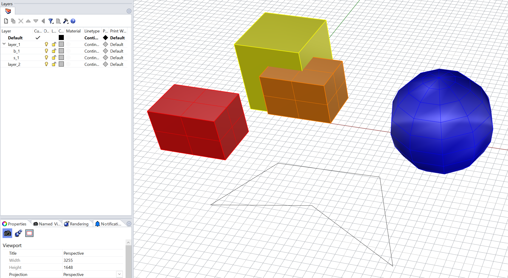

import rhino3dm
model = rhino3dm.File3dm.Read('./data/oat_model.3dm')
print('model object: ', model)- 1
-
read
.3dmfile asFile3dmobject
model object: <rhino3dm._rhino3dm.File3dm object at 0x10401cab0>.3dm fileThe demo file: oat_model.3dm

.3dm fileimport rhino3dm
model = rhino3dm.File3dm.Read('./data/oat_model.3dm')
print('model object: ', model).3dm file as File3dm object
model object: <rhino3dm._rhino3dm.File3dm object at 0x10401cab0>method rhino3dm.File3dm.Read()
Reads a 3dm file from the specified path.
Parameters:
Returns:
Return type:
Layerlayer_table = model.Layers
print('layer table: ', layer_table, '\n')
for idx, layer in enumerate(iter(layer_table)):
print('layer ', idx, ' Object : ', layer)
print(' ', idx, ' Id : ', layer.Id)
print(' ', idx, ' Index : ', layer.Index)
print(' ', idx, ' Name : ', layer.Name)
print(' ', idx, ' Fullpath: ', layer.FullPath)LayerTable object
LayerTable to get each Layer and its attributes
layer table: <rhino3dm._rhino3dm.File3dmLayerTable object at 0x10838c130>
layer 0 Object : <rhino3dm._rhino3dm.Layer object at 0x10659bcf0>
0 Id : 212960d6-ad46-439d-8516-772ce85fde03
0 Index : 0
0 Name : Default
0 Fullpath: Default
layer 1 Object : <rhino3dm._rhino3dm.Layer object at 0x103fa1870>
1 Id : 430ce6c7-13d8-40d9-ae38-08e0e7d0f1df
1 Index : 1
1 Name : layer_1
1 Fullpath: layer_1
layer 2 Object : <rhino3dm._rhino3dm.Layer object at 0x103fc0430>
2 Id : 8e04c4aa-0bcb-4331-9ac1-79ed7bacc9f1
2 Index : 2
2 Name : b_1
2 Fullpath: layer_1::b_1
layer 3 Object : <rhino3dm._rhino3dm.Layer object at 0x103fc3eb0>
3 Id : 906c125d-ea30-483a-bf45-6fc769473e09
3 Index : 3
3 Name : s_1
3 Fullpath: layer_1::s_1
layer 4 Object : <rhino3dm._rhino3dm.Layer object at 0x103fc3670>
4 Id : 1d1e5147-f5b7-4fa1-82ea-3ece64f5994c
4 Index : 4
4 Name : layer_2
4 Fullpath: layer_2class rhino3dm.File3dmLayerTable
Each item is a rhino3dm.Layer object
Methods:
Objectsobject_table = model.Objects
print('object table: ', object_table, '\n')
for idx, obj in enumerate(iter(object_table)):
print('object ', idx, ' Object : ', obj)
print(' ', idx, ' Geometry : ', obj.Geometry)
print(' ', idx, ' Attributes : ', obj.Attributes)
print(' ', idx, ' Attributes.Id : ', obj.Attributes.Id)
print(' ', idx, ' Attributes.Name : ', obj.Attributes.Name)
print(' ', idx, ' Attributes.LayerIndex : ', obj.Attributes.LayerIndex)
print(' ', idx, ' Attributes.ObjectColor: ', obj.Attributes.ObjectColor)
print(' ', idx, ' Attributes.Visible : ', obj.Attributes.Visible)
print()ObjectTable in the model
ObjectTable to get each Object and its attributes
object table: <rhino3dm._rhino3dm.File3dmObjectTable object at 0x103fc1df0>
object 0 Object : <rhino3dm._rhino3dm.File3dmObject object at 0x103fc2670>
0 Geometry : <rhino3dm._rhino3dm.Extrusion object at 0x1083e0930>
0 Attributes : <rhino3dm._rhino3dm.ObjectAttributes object at 0x1083e0930>
0 Attributes.Id : fc49c0ee-7bd9-4097-961d-3925257a4738
0 Attributes.Name : solid_1
0 Attributes.LayerIndex : 3
0 Attributes.ObjectColor: (255, 255, 0, 255)
0 Attributes.Visible : True
object 1 Object : <rhino3dm._rhino3dm.File3dmObject object at 0x1083bfc70>
1 Geometry : <rhino3dm._rhino3dm.Brep object at 0x103fc2670>
1 Attributes : <rhino3dm._rhino3dm.ObjectAttributes object at 0x103fc2670>
1 Attributes.Id : 478a0a94-ad34-41cf-b917-b6b0050dad8f
1 Attributes.Name : polysurf_2
1 Attributes.LayerIndex : 2
1 Attributes.ObjectColor: (255, 127, 0, 255)
1 Attributes.Visible : True
object 2 Object : <rhino3dm._rhino3dm.File3dmObject object at 0x108400d30>
2 Geometry : <rhino3dm._rhino3dm.PolylineCurve object at 0x1083bfc70>
2 Attributes : <rhino3dm._rhino3dm.ObjectAttributes object at 0x1083bfc70>
2 Attributes.Id : 9afb6b4b-986d-47e6-8d2d-89c6d5448117
2 Attributes.Name : curve_1
2 Attributes.LayerIndex : 0
2 Attributes.ObjectColor: (0, 0, 0, 255)
2 Attributes.Visible : True
object 3 Object : <rhino3dm._rhino3dm.File3dmObject object at 0x108401ab0>
3 Geometry : <rhino3dm._rhino3dm.Mesh object at 0x1083bfc70>
3 Attributes : <rhino3dm._rhino3dm.ObjectAttributes object at 0x1083bfc70>
3 Attributes.Id : c85d4579-e3df-492c-a4e4-dc9626c19397
3 Attributes.Name : ball_1
3 Attributes.LayerIndex : 4
3 Attributes.ObjectColor: (0, 0, 255, 255)
3 Attributes.Visible : True
object 4 Object : <rhino3dm._rhino3dm.File3dmObject object at 0x108400df0>
4 Geometry : <rhino3dm._rhino3dm.Brep object at 0x1083bfc70>
4 Attributes : <rhino3dm._rhino3dm.ObjectAttributes object at 0x1083bfc70>
4 Attributes.Id : 19067883-7bbc-4871-91bb-ad640c96bb46
4 Attributes.Name : polysurf_1
4 Attributes.LayerIndex : 2
4 Attributes.ObjectColor: (255, 0, 0, 255)
4 Attributes.Visible : True
attrib rhino3dm.File3dm.Objects
Returns a File3dmObjectTable: Gets access to the class associated with this file, which contains all objects.
class rhino3dm.File3dmObjectTable
Each item is a rhino3dm.Object object
Methods:
Attribs:
ObjectAttributes: Gets the attributes that are linked with this document object.rhino3dm.GeometryBase: Gets the geometry that is linked with this document object.Geometryfor idx, obj in enumerate(iter(object_table)):
print('object ', idx, ' Object : ', obj)
print(' ', idx, ' Geometry : ', obj.Geometry)
print(' ', idx, ' Geometry.ObjectType : ', obj.Geometry.ObjectType)
print(' ', idx, ' Geometry.BoundingBox() : ', obj.Geometry.GetBoundingBox())
print(' ', idx, ' Geometry.BoundingBox().Min : ', obj.Geometry.GetBoundingBox().Min)
print(' ', idx, ' Geometry.BoundingBox().Min.X : ', obj.Geometry.GetBoundingBox().Min.X)
print('')
# if isinstance(obj.Geometry, rhino3dm.Curve):
if isinstance(obj.Geometry, rhino3dm.PolylineCurve):
print(' curve Object :', obj)
print(' curve Geometry :', obj.Geometry)
print(' curve IsClosed :', obj.Geometry.IsClosed)
print(' curve IsPlanar :', obj.Geometry.IsPlanar())
print(' curve IsPolyline :', obj.Geometry.IsPolyline())
print()
print(' curve PointCount :', obj.Geometry.PointCount)
for i in range(obj.Geometry.PointCount):
# print(' curve pt ', i, ' : ', obj.Geometry.ToPolyline().PointAt(i))
print(' curve pt ', i, ' : ', obj.Geometry.Point(i))
print()
print(' curve SegmentCount :', obj.Geometry.ToPolyline().SegmentCount)
for i in range(obj.Geometry.ToPolyline().SegmentCount):
print(' segement ', i, ' : ', obj.Geometry.ToPolyline().SegmentAt(i))
print()object 0 Object : <rhino3dm._rhino3dm.File3dmObject object at 0x1084253f0>
0 Geometry : <rhino3dm._rhino3dm.Extrusion object at 0x108400df0>
0 Geometry.ObjectType : ObjectType.Extrusion
0 Geometry.BoundingBox() : <rhino3dm._rhino3dm.BoundingBox object at 0x108400df0>
0 Geometry.BoundingBox().Min : -4.280928135761822,2.5452328892155567,-1.6829865361077092
0 Geometry.BoundingBox().Min.X : -4.280928135761822
object 1 Object : <rhino3dm._rhino3dm.File3dmObject object at 0x1083be930>
1 Geometry : <rhino3dm._rhino3dm.Brep object at 0x108400df0>
1 Geometry.ObjectType : ObjectType.Brep
1 Geometry.BoundingBox() : <rhino3dm._rhino3dm.BoundingBox object at 0x108400df0>
1 Geometry.BoundingBox().Min : 0.0,0.0,0.0
1 Geometry.BoundingBox().Min.X : 0.0
object 2 Object : <rhino3dm._rhino3dm.File3dmObject object at 0x1083b2eb0>
2 Geometry : <rhino3dm._rhino3dm.PolylineCurve object at 0x1083be930>
2 Geometry.ObjectType : ObjectType.Curve
2 Geometry.BoundingBox() : <rhino3dm._rhino3dm.BoundingBox object at 0x1083a5ef0>
2 Geometry.BoundingBox().Min : 1.7635839661870252,-22.199390961255418,0.0
2 Geometry.BoundingBox().Min.X : 1.7635839661870252
curve Object : <rhino3dm._rhino3dm.File3dmObject object at 0x1083b2eb0>
curve Geometry : <rhino3dm._rhino3dm.PolylineCurve object at 0x1083a5ef0>
curve IsClosed : True
curve IsPlanar : True
curve IsPolyline : True
curve PointCount : 6
curve pt 0 : 1.7635839661870252,-18.01287713465675,0.0
curve pt 1 : 5.955418421843674,-9.19466507794998,0.0
curve pt 2 : 19.16215707583545,-8.725676195963398,0.0
curve pt 3 : 25.715850208939404,-22.199390961255418,0.0
curve pt 4 : 13.289303668521596,-15.366027492596611,0.0
curve pt 5 : 1.7635839661870252,-18.01287713465675,0.0
curve SegmentCount : 5
segement 0 : <rhino3dm._rhino3dm.LineCurve object at 0x1040382b0>
segement 1 : <rhino3dm._rhino3dm.LineCurve object at 0x1040382b0>
segement 2 : <rhino3dm._rhino3dm.LineCurve object at 0x1040382b0>
segement 3 : <rhino3dm._rhino3dm.LineCurve object at 0x1040382b0>
segement 4 : <rhino3dm._rhino3dm.LineCurve object at 0x1040382b0>
object 3 Object : <rhino3dm._rhino3dm.File3dmObject object at 0x108425970>
3 Geometry : <rhino3dm._rhino3dm.Mesh object at 0x1083b2eb0>
3 Geometry.ObjectType : ObjectType.Mesh
3 Geometry.BoundingBox() : <rhino3dm._rhino3dm.BoundingBox object at 0x1083b2eb0>
3 Geometry.BoundingBox().Min : 16.164949083117783,-2.8815754439567156,-7.0
3 Geometry.BoundingBox().Min.X : 16.164949083117783
object 4 Object : <rhino3dm._rhino3dm.File3dmObject object at 0x1083d3c70>
4 Geometry : <rhino3dm._rhino3dm.Brep object at 0x1083b2eb0>
4 Geometry.ObjectType : ObjectType.Brep
4 Geometry.BoundingBox() : <rhino3dm._rhino3dm.BoundingBox object at 0x1059640b0>
4 Geometry.BoundingBox().Min : -9.675258776512376,-10.151641586438862,0.0
4 Geometry.BoundingBox().Min.X : -9.675258776512376
Constructor:
Attribs:
Methods:
Finds the closest point on or in the bounding box.
Parameters: point (rhino3dm.Point3d) – Sample point.
Returns: The point on or in the box that is closest to the sample point.
Return type: rhino3dm.Point3d
Tests a point for bounding box inclusion. This is the same as calling Contains(point, false)
Parameters: point (rhino3dm.Point3d) – Point to test.
Returns: True if the point is on the inside of or coincident with this bounding box; otherwise false.
Return type: bool
Constructor:
Attributs:
X: float: Gets or sets the X (first) coordinate of this point.
Y: float: Gets or sets the Y (second) coordinate of this point.
Z: float: Gets or sets the Z (third) coordinate of this point.
Methods:
---
title: "rhino3dm exercise 01"
filters:
- line-highlight
---
# Extract info from `.3dm` file
The demo file: [oat_model.3dm](./data/oat_model.3dm)

## read `.3dm` file
```{python}
import rhino3dm
model = rhino3dm.File3dm.Read('./data/oat_model.3dm') # <1>
print('model object: ', model)
```
1. read `.3dm` file as `File3dm` object
:::: {.column-margin}
::: {.callout-tip title="File3dm.Read()" collapse="true"}
[**_method_** `rhino3dm.File3dm.Read()`](https://mcneel.github.io/rhino3dm/python/api/File3dm.html#rhino3dm.File3dm.Read)
<br />
Reads a `3dm` file from the specified path.
<br />
Parameters:
- path (str) – The file to read.
Returns:
- new File3dm on success, None on error.
Return type:
- File3dm
:::
::::
## read `Layer`
```{python}
layer_table = model.Layers # <2>
print('layer table: ', layer_table, '\n')
for idx, layer in enumerate(iter(layer_table)): # <3>
print('layer ', idx, ' Object : ', layer)
print(' ', idx, ' Id : ', layer.Id)
print(' ', idx, ' Index : ', layer.Index)
print(' ', idx, ' Name : ', layer.Name)
print(' ', idx, ' Fullpath: ', layer.FullPath)
```
2. get the `LayerTable` object
3. iterate `LayerTable` to get each `Layer` and its attributes
:::: {.column-margin}
::: {.callout-tip title="File3dm.Layers" collapse="true"}
[**_attrib_** `rhino3dm.File3dm.Layer`](https://mcneel.github.io/rhino3dm/python/api/File3dm.html#rhino3dm.File3dm.Layers)
<br />
IList<Layer>: Layers in this file.
<br />
Returns:
- File3dmLayerTable
:::
::: {.callout-tip title="File3dmLayerTable" collapse="true"}
[**_class_** `rhino3dm.File3dmLayerTable`](https://mcneel.github.io/rhino3dm/python/api/File3dmLayerTable.html#module-rhino3dm)
<br />
Each item is a `rhino3dm.Layer` object
<br />
Methods:
- \__getitem__()
- \__iter__()
- \__len__()
- ...
:::
::: {.callout-tip title="Layer" collapse="true"}
[**_class_** `rhino3dm.Layer`](https://mcneel.github.io/rhino3dm/python/api/Layer.html#module-rhino3dm)
<br />
Attributes:
- Color
- FullPath
- Id
- Index
- Locked
- Name
- ParentLayerId
- Visible
- ...
:::
::::
## read `Objects`
```{python}
object_table = model.Objects # <4>
print('object table: ', object_table, '\n')
for idx, obj in enumerate(iter(object_table)): # <5>
print('object ', idx, ' Object : ', obj)
print(' ', idx, ' Geometry : ', obj.Geometry)
print(' ', idx, ' Attributes : ', obj.Attributes)
print(' ', idx, ' Attributes.Id : ', obj.Attributes.Id)
print(' ', idx, ' Attributes.Name : ', obj.Attributes.Name)
print(' ', idx, ' Attributes.LayerIndex : ', obj.Attributes.LayerIndex)
print(' ', idx, ' Attributes.ObjectColor: ', obj.Attributes.ObjectColor)
print(' ', idx, ' Attributes.Visible : ', obj.Attributes.Visible)
print()
```
4. get `ObjectTable` in the model
5. iterate `ObjectTable` to get each `Object` and its attributes
:::: {.column-margin}
::: {.callout-tip title="File3dm.Objects" collapse="true"}
[**_attrib_** `rhino3dm.File3dm.Objects`](https://mcneel.github.io/rhino3dm/python/api/File3dm.html#rhino3dm.File3dm.Objects)
<br />
Returns a `File3dmObjectTable`: Gets access to the class associated with this file, which contains all objects.
:::
::: {.callout-tip title="File3dmObjectTable" collapse="true"}
[**_class_** `rhino3dm.File3dmObjectTable`](https://mcneel.github.io/rhino3dm/python/api/File3dmObjectTable.html#module-rhino3dm)
<br />
Each item is a `rhino3dm.Object` object
<br />
Methods:
- \__getitem__()
- \__iter__()
- \__len__()
- ...
:::
::: {.callout-tip title="File3dmObject" collapse="true"}
[**_class_** `rhino3dm.File3dmObject`](https://mcneel.github.io/rhino3dm/python/api/File3dmObject.html#module-rhino3dm)
<br />
Attribs:
- Attributes
- `ObjectAttributes`: Gets the attributes that are linked with this document object.
- Geometry
- `rhino3dm.GeometryBase`: Gets the geometry that is linked with this document object.
:::
::: {.callout-tip title="ObjectAttributes" collapse="true"}
[**_class_** `rhino3dm.ObjectAttributes`](https://mcneel.github.io/rhino3dm/python/api/ObjectAttributes.html#module-rhino3dm)
<br />
Attribs:
- Id
- LayerIndex
- MaterialIndex
- Name
- ObjectColor
- Visible
- ...
:::
::::
## read `Geometry`
```{python}
for idx, obj in enumerate(iter(object_table)):
print('object ', idx, ' Object : ', obj)
print(' ', idx, ' Geometry : ', obj.Geometry)
print(' ', idx, ' Geometry.ObjectType : ', obj.Geometry.ObjectType)
print(' ', idx, ' Geometry.BoundingBox() : ', obj.Geometry.GetBoundingBox())
print(' ', idx, ' Geometry.BoundingBox().Min : ', obj.Geometry.GetBoundingBox().Min)
print(' ', idx, ' Geometry.BoundingBox().Min.X : ', obj.Geometry.GetBoundingBox().Min.X)
print('')
# if isinstance(obj.Geometry, rhino3dm.Curve):
if isinstance(obj.Geometry, rhino3dm.PolylineCurve):
print(' curve Object :', obj)
print(' curve Geometry :', obj.Geometry)
print(' curve IsClosed :', obj.Geometry.IsClosed)
print(' curve IsPlanar :', obj.Geometry.IsPlanar())
print(' curve IsPolyline :', obj.Geometry.IsPolyline())
print()
print(' curve PointCount :', obj.Geometry.PointCount)
for i in range(obj.Geometry.PointCount):
# print(' curve pt ', i, ' : ', obj.Geometry.ToPolyline().PointAt(i))
print(' curve pt ', i, ' : ', obj.Geometry.Point(i))
print()
print(' curve SegmentCount :', obj.Geometry.ToPolyline().SegmentCount)
for i in range(obj.Geometry.ToPolyline().SegmentCount):
print(' segement ', i, ' : ', obj.Geometry.ToPolyline().SegmentAt(i))
print()
```
:::: {.column-margin}
::: {.callout-tip title="GeomtryBase" collapse="true"}
[**_class_** `rhino3dm.GeometryBase`](https://mcneel.github.io/rhino3dm/python/api/GeometryBase.html#module-rhino3dm)
<br />
Attribs:
- ObjectType
- ...
Methods:
- GetBoundingBox()
- ...
:::
::: {.callout-tip title="BoundingBox" collapse="true"}
[**_class_** `rhino3dm.BoundingBox`](https://mcneel.github.io/rhino3dm/python/api/BoundingBox.html#module-rhino3dm)
<br />
Constructor:
- BoundingBox(min, max)
- BoundingBox(minX, minY, minZ, maxX, maxY, maxZ)
- ...
Attribs:
- Min:
- rhino3dm.Point3d: Gets or sets the point in the minimal corner.
- Max:
- rhino3dm.Point3d: Gets or sets the point in the maximal corner.
- Center:
- rhino3dm.Point3d: Gets the point in the center of the bounding box.
- Area:
- float: Gets the area of this BoundingBox.
- Volume:
- float: Gets the volume of this BoundingBox.
- Diagonal:
- rhino3dm.Vector3d: Gets the diagonal vector of this BoundingBox. The diagonal connects the Min and Max points.
Methods:
- ClosestPoint(point)
- Finds the closest point on or in the bounding box.
- Parameters: point (rhino3dm.Point3d) – Sample point.
- Returns: The point on or in the box that is closest to the sample point.
- Return type: rhino3dm.Point3d
- Contains(point)
- Tests a point for bounding box inclusion. This is the same as calling Contains(point, false)
- Parameters: point (rhino3dm.Point3d) – Point to test.
- Returns: True if the point is on the inside of or coincident with this bounding box; otherwise false.
- Return type: bool
- ...
:::
::: {.callout-tip title="Point3d" collapse="true"}
[**_class_** `rhino3dm.Point3d`](https://mcneel.github.io/rhino3dm/python/api/Point3d.html)
<br />
Constructor:
- Point3d(x, y, z)
Attributs:
- X: float: Gets or sets the X (first) coordinate of this point.
- Y: float: Gets or sets the Y (second) coordinate of this point.
- Z: float: Gets or sets the Z (third) coordinate of this point.
Methods:
- DistanceTo(other)
- Computes the distance between two points.
- Parameters: other (rhino3dm.Point3d) – Other point for distance measurement.
- Returns: The length of the line between this and the other point; or 0 if any of the points is not valid.
- Return type: float
- ...
:::
::: {.callout-tip title="Curve" collapse="true"}
[**_class_** `rhino3dm.Curve`](https://mcneel.github.io/rhino3dm/python/api/Curve.html)
<br />
:::
::: {.callout-tip title="PolylineCurve" collapse="true"}
[**_class_** `rhino3dm.PolylineCurve`](https://mcneel.github.io/rhino3dm/python/api/PolylineCurve.html)
<br />
:::
::: {.callout-tip title="Polyline" collapse="true"}
[**_class_** `rhino3dm.Polyline`](https://mcneel.github.io/rhino3dm/python/api/Polyline.html)
<br />
:::
::::
## backup code
```python
```